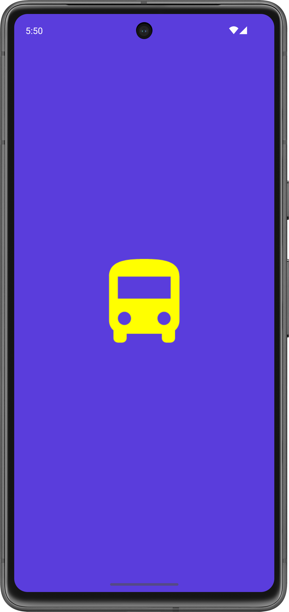
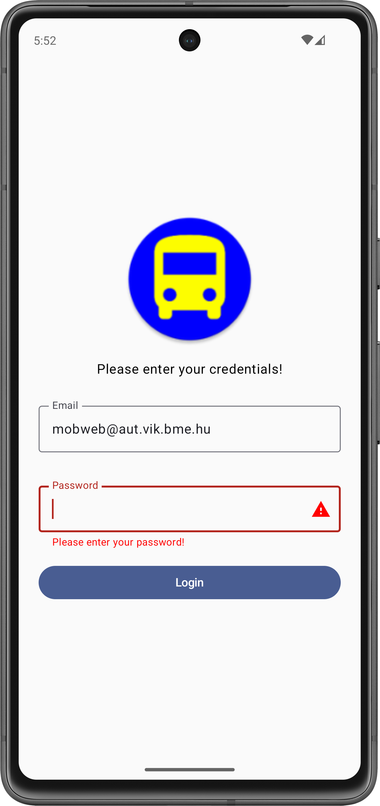

Labor 02 - UI - Tömegközlekedési alkalmazás¶
Bevezető¶
A labor során egy tömegközlekedési vállalat számára megálmodott alkalmazás vázát készítjük el. Az alkalmazással a felhasználók különböző járművekre vásárolhatnak majd bérleteket. Az üzleti logikát (az authentikációt, a bevitt adatok ellenőrzését, a fizetés lebonyolítását) egyelőre csak szimulálni fogjuk, a labor fókusza a felületek és a köztük való navigáció elkészítése lesz.




IMSc
A laborfeladatok sikeres befejezése után az IMSc feladat-ot megoldva 2 IMSc pont szerezhető.
Előkészületek¶
A feladatok megoldása során ne felejtsd el követni a feladat beadás folyamatát.
Git repository létrehozása és letöltése¶
-
Moodle-ben keresd meg a laborhoz tartozó meghívó URL-jét és annak segítségével hozd létre a saját repository-dat.
-
Várd meg, míg elkészül a repository, majd checkout-old ki.
Egyetemi laborokban, ha a checkout során nem kér a rendszer felhasználónevet és jelszót, és nem sikerül a checkout, akkor valószínűleg a gépen korábban megjegyzett felhasználónévvel próbálkozott a rendszer. Először töröld ki a mentett belépési adatokat (lásd itt), és próbáld újra.
-
Hozz létre egy új ágat
megoldasnéven, és ezen az ágon dolgozz. -
A
neptun.txtfájlba írd bele a Neptun kódodat. A fájlban semmi más ne szerepeljen, csak egyetlen sorban a Neptun kód 6 karaktere.
Android, Java, Kotlin
Az Android hagyományosan Java nyelven volt fejleszthető, azonban az utóbbi években a Google átállt a Kotlin nyelvre. Ez egy sokkal modernebb nyelv, mint a Java, sok olyan nyelvi elemet ad, amit kényelmes használni, valamint új nyelvi szabályokat, amikkel például elkerülhetőek a Java nyelven gyakori NullPointerException jellegű hibák.
Másrészről viszont a nyelv sok mindenben tér el a hagyományosan C jellegű szintaktikát követő nyelvektől, amit majd látni is fogunk. A labor előtt érdemes megismerkedni a nyelvvel, egyrészt a fent látható linken, másrészt ezt az összefoglaló cikket átolvasva.
Projekt létrehozása¶
Első lépésként indítsuk el az Android Studio-t, majd:
- Hozzunk létre egy új projektet, válasszuk az Empty Activity lehetőséget.
- A projekt neve legyen
PublicTransport, a kezdő packagehu.bme.aut.android.publictransport, a mentési hely pedig a kicheckoutolt repository-n belül a PublicTransport mappa. - Nyelvnek válasszuk a Kotlin-t.
- A minimum API szint legyen API24: Android 7.0.
- A Build configuration language Kotlin DSL legyen.
FILE PATH
A projekt a repository-ban lévő PublicTransport könyvtárba kerüljön, és beadásnál legyen is felpusholva! A kód nélkül nem tudunk maximális pontot adni a laborra!
A projekt létrehozásakor, a fordító keretrendszernek rengeteg függőséget kell letöltenie. Amíg ez nem történt meg, addig a projektben nehézkes navigálni, hiányzik a kódkiegészítés, stb... Éppen ezért ezt tanácsos kivárni, azonban ez akár 5 percet is igénybe vehet az első alkalommal! Az ablak alján látható információs sávot kell figyelni.
Láthatjuk, hogy létrejött egy projekt, abban egy Activity, MainActivity néven. Ez be is lett írva automatikusan a Manifest fájlba mint Activity komponens.
Következő lépésként vagyük fel a szükséges függőségeket a projektbe! Ehhez nyissuk meg a
- Modul szintű
build.gradle.ktsfájlt (app -> build.gradle.kts) - Illetve a
libs.version.tomlfájlt (gradle -> libs.versions.toml)
Először másoljuk be a következő függőségeket a libs.version.toml verzió katalógus fájlba:
[versions]
agp = "8.12.3"
kotlin = "2.2.20"
coreKtx = "1.17.0"
junit = "4.13.2"
junitVersion = "1.3.0"
espressoCore = "3.7.0"
lifecycleRuntimeKtx = "2.9.3"
activityCompose = "1.12.0-alpha08"
composeBom = "2025.09.00"
coreSplashscreen = "1.0.1"
nav3Core = "1.0.0-alpha09"
kotlinSerialization = "2.2.20"
kotlinxSerializationCore = "1.9.0"
[libraries]
...
androidx-core-splashscreen = { module = "androidx.core:core-splashscreen", version.ref = "coreSplashscreen" }
androidx-navigation3-runtime = { module = "androidx.navigation3:navigation3-runtime", version.ref = "nav3Core" }
androidx-navigation3-ui = { module = "androidx.navigation3:navigation3-ui", version.ref = "nav3Core" }
kotlinx-serialization-core = { module = "org.jetbrains.kotlinx:kotlinx-serialization-core", version.ref = "kotlinxSerializationCore" }
[plugins]
jetbrains-kotlin-serialization = { id = "org.jetbrains.kotlin.plugin.serialization", version.ref = "kotlinSerialization"}
Itt a [versions] tag-en belül adhatunk egy változó nevet, majd egy verzió értéket, amit majd a következő lépésben átadunk a version.ref-nek. Ez mondja meg, hogy melyik verziót használja az adott modulból. A [libraries] tag-en belül definiálunk szintén egy változót androidx-navigation-compose néven, amit majd később használunk fel a build.gradle.kts fájlban. Ennek megadjuk, hogy melyik modul-t szeretnénk beletenni a projektbe, valamint egy verzió számot, amit korábban már definiáltunk.
Hogy ha ezzel megvagyunk, nyissuk meg a build.gradle.kts fájlt, és adjuk hozzá az imént felvett modulokat a dependencies tag-en belülre:
dependencies {
...
implementation(libs.androidx.core.splashscreen)
implementation(libs.androidx.navigation3.ui)
implementation(libs.androidx.navigation3.runtime)
implementation(libs.kotlinx.serialization.core)
}
Itt az implementation függvény segítségével tudunk új függőséget felvenni a projektbe, és ezen belül meg kell adnunk a modul nevét, amit már korábban definiáltunk a libs.version.toml-ban. Ezt a következő képpen tehetjük meg:
- megadjuk a fájl nevét, jelen esetben
libs - majd ezután megadjuk annak a változónak a nevét amihez hozzárendeltük korábban a modulunkat.
Végezetül kapcsoljuk be az alábbi plugint a build.gradle.kts fáj tetején:
plugins {
...
alias(libs.plugins.jetbrains.kotlin.serialization)
}
Hogy ha ezzel is megvagyunk kattintsunk a Sync Now gombra a jobb fölső sarokban, és várjuk meg míg letölti a szükséges függőségeket.
Sync Now
Figyelem ha ezt a lépést kihagyjuk, akkor az Android Studio nem fogja megtalálni a szükséges elemeket, és ez később gondot okozhat!
Splash képernyő (0.5 pont)¶
Miután a felhasználó elindította az alkalmazást, egy "üdvözlő/splash" képernyővel szeretnénk köszönteni. Ez egy elegáns megoldás arra, hogy az alkalmazás betöltéséig ne egy egyszínű képernyő legyen a felhasználó előtt, hanem jelen esetben egy alkalmazás logo, egy tetszőleges háttér színnel.
Splash scheen Android 12 (API 31) alatt
(A szükséges fájl innen elérhető)
Hozzunk létre egy új XML fájlt a drawable mappában splash_background.xml néven. Ez lesz a splash képernyőnkön megjelenő grafika. A tartalma az alábbi legyen:
<?xml version="1.0" encoding="utf-8"?>
<layer-list xmlns:android="http://schemas.android.com/apk/res/android">
<item>
<bitmap
android:gravity="fill_horizontal|clip_vertical"
android:src="@drawable/splash_image"/>
</item>
</layer-list>
Jelen esetben egyetlen képet teszünk ide, de további item-ek felvételével komplexebb dolgokat is összeállíthatnánk itt. Tipikus megoldás például egy egyszínű háttér beállítása, amin az alkalmazás ikonja látszik.
Nyissuk meg a values/themes.xml fájlt. Ez definiálja az alkalmazásban használt különböző témákat. A splash képernyőhöz egy új témát fogunk létrehozni, amelyben az előbb létrehozott drawable-t állítjuk be az alkalmazásablakunk hátterének (mivel ez látszik valójában, amíg nem töltött be a UI többi része). Ezt így tehetjük meg:
<style name="SplashTheme" parent="Theme.AppCompat.NoActionBar">
<item name="android:windowBackground">@drawable/splash_background</item>
</style>
A fenti témát illesszük be a night minősítővel ellátott themes.xml fájlba is.
A téma használatához az alkalmazásunk manifest fájlját (AndroidManifest.xml) kell módosítanunk. Ezt megnyitva láthatjuk, hogy jelenleg a teljes alkalmazás az AppTheme nevű témát használja.
<application
...
android:theme="@style/Theme.PublicTransport" >
Mi ezt nem akarjuk megváltoztatni, hanem csak a LoginActivity-nek akarunk egy új témát adni. Ezt így tehetjük meg:
<activity
android:name=".LoginActivity"
android:theme="@style/SplashTheme">
...
</activity>
Mivel a betöltés után már nem lesz szükségünk erre a háttérre, a LoginActivity.kt fájlban a betöltés befejeztével visszaállíthatjuk az eredeti témát, amely fehér háttérrel rendelkezik. Ezt az onCreate függvény elején tegyük meg, még a super hívás előtt:
override fun onCreate(savedInstanceState: Bundle?) {
setTheme(R.style.Theme_PublicTransport)
...
}
Most már futtathatjuk az alkalmazást, és betöltés közben látnunk kell a berakott képet. A splash képernyő általában akkor hasznos, ha az alkalmazás inicializálása sokáig tart. Mivel a mostani alkalmazásunk még nagyon gyorsan indul el, szimulálhatunk egy kis töltési időt az alábbi módon:
override fun onCreate(savedInstanceState: Bundle?) {
try {
Thread.sleep(1000)
} catch (e: InterruptedException) {
e.printStackTrace()
}
setTheme(R.style.Theme_PublicTransport);
...
}
API 31 felett bevezetésre került egy Splash Screen API, most ezt fogjuk használni. Ehhez már korábban felvettük a szükséges függőséget a build.gradle.kts fájlba.
Készítsünk el egy tetszőleges ikont, amit majd fel fogunk használni a splash képernyőnk közepén. Ehhez az Android Studio beépített Asset Studio eszközét fogjuk használni. Bal oldalon a Project fül alatt nyissuk meg a Resource Manager-t, majd nyomjunk a + gombra, ott pedig az Image Asset lehetőségre.
- Itt Launcher Icon-t szeretnénk majd generálni, tehát válasszuk azt.
- A neve legyen ic_transport
- Az egyszerűség kedvéért most Clip Art-ból fogjuk elkészíteni az ikonunkat, így válasszuk azt, majd az alatta lévő gombnál válasszunk egy szimpatikusat (pl. a bus keresési szóval).
- Ez után válasszunk egy szimpatikus színt.
- Ha akarunk, állíthatunk a méretezésen is.
- A
Background Layerfülön beállíthatjuk a háttér színét is. - A beállításoknál állítsuk át, hogy az ikon PNG formában készüljön el.
- Ezután nyomjunk a Next majd a Finish gombra.
Láthatjuk, hogy több féle ikon készült, több féle méretben. Ezekből a rendszer a konfiguráció függvényében fog választani.
A splash képernyő elkészítéséhez egy új stílust kell definiálnunk a themes.xml fájlban. Vegyük fel az alábbi kódrészletet a meglévő stílus alá. (A tárgy keretein belül nagyon kevés XML kóddal fogunk foglalkozni.)
<style name="Theme.PublicTransport.Starting" parent="Theme.SplashScreen">
<item name="windowSplashScreenBackground">#5A3DDC</item>
<item name="windowSplashScreenAnimatedIcon">@drawable/ic_transport_foreground</item>
<item name="android:windowSplashScreenIconBackgroundColor">#5A3DDC</item>
<item name="postSplashScreenTheme">@style/Theme.PublicTransport</item>
</style>
Az új stílusunk a Theme.PublicTransport.Starting nevet viseli, és a Theme.SplashScreen témából származik. Ezen kívül beállítottuk benne, hogy
windowSplashScreenBackground: a splash képernyő háttere (természetesen más is választható),windowSplashScreenAnimatedIcon: a középen megjelenő ikon a saját ikonunk legyen, annak is csak az előtere,android:windowSplashScreenIconBackgroundColor: az ikonunk mögött milyen háttér legyen (ez is személyre szabható más színnel),postSplashScreenTheme: a splash screen után milyen stílusra kell visszaváltania az alkalmazásnak.
Note
A Splash Screen API ennél jóval többet tud, akár animálhatjuk is a megjelenített képet, azonban ez sajnos túlmutat a labor keretein.
Most már, hogy bekonfiguráltuk a splash képernyőnket, már csak be kell állítanunk a használatát. Ehhez először az imént létrehozott stílust kell alkalmaznunk MainActivity-re a AndroidManifest.xml-ben.
<activity
android:theme="@style/Theme.PublicTransport.Starting"
android:name=".MainActivity"
android:exported="true">
...
</activity>
Ezután állítsuk be az alkalmazásunk ikonját is:
<application
...
android:icon="@mipmap/ic_transport"
android:roundIcon="@mipmap/ic_transport_round">
...
</application>
Splash Screen-navigációval
A Splash Screent a navigáció segítségével is meg lehet oldani, erről a labor végén egy ismertető feladat fog segítséget mutatni. (Ez nem szükséges a labor megszerzéséhez, a feladat nélkül is el lehet érni a maximális pontot, azonban az érdekesség kedvéért érdemes végig csinálni.)
Próbáljuk ki az alkalmazásunkat!
BEADANDÓ (0.5 pont)
Készíts egy képernyőképet, amelyen látszik a splash képernyő (emulátoron, készüléket tükrözve vagy képernyőfelvétellel), egy ahhoz tartozó kódrészlet, valamint a neptun kódod a kódban valahol kommentként! A képet a megoldásban a repository-ba f1.png néven töltsd föl!
A képernyőkép szükséges feltétele a pontszám megszerzésének!
Login képernyő (0.5 pont)¶
Most már elkészíthetjük a login képernyőt. A felhasználótól egy e-mail címet, illetve egy számokból álló jelszót fogunk bekérni, és egyelőre csak azt fogjuk ellenőrizni, hogy beírt-e valamit a mezőbe.
Felület¶
Először hozzunk létre egy új Packaget screen néven a projekt mappában, majd ezen belül hozzunk létre egy új Kotlin Filet LoginScreen néven. Ezen a képernyőn fognak elhelyezkedni a szükséges feliratok, gombok, és beviteli mezők. Ehhez használjuk fel az alábbi kódot:
@Composable
fun LoginScreen(
onSuccess: () -> Unit
) {
Column(
modifier = Modifier
.fillMaxSize()
.padding(16.dp),
verticalArrangement = Arrangement.Center,
horizontalAlignment = Alignment.CenterHorizontally
) {
//TODO Logo
//TODO Header Text
//TODO Email Field
//TODO Password Field
//TODO Login Button
}
}
private fun isEmailValid(email: String) = email.isEmpty()
private fun isPasswordValid(password: String) = password.isEmpty()
@Preview
@Composable
fun PreviewLoginScreen() {
LoginScreen(onSuccess = {})
}
Hogy ha megvan a LoginScreen váza, akkor kezdjük el belepakolni az egyes elemeket. (Image, Text, TextField, Button)
Kezdjük az Image Composable-lel. Az egyszerűség kedvéért az alkalmazás ikonját fogjuk betenni a bejelentkező képernyő tetejére dizájn elemként.
//Logo
Image(
painter = painterResource(id = R.mipmap.ic_transport_round),
contentDescription = "Logo",
modifier = Modifier.size(160.dp)
)
Mivel az Image Composable csak vektoros erőforrást fogad el, elsőre hibát kapunk. Ezt most a legegyszerűbben úgy oldhatjuk meg, ha az ic_transport és az ic_transport_round erőforrásoknak kiröröljük az xml-es verzióit, és csak a png-ket hagyjuk meg. Innen már az alkalmazás buildelése után megjelenik a felületünk előnézete is.
Folytassuk a Text Composable-lel. Ez egy üzenetként fog szolgálni a form tetején "Please enter your credentials!" felirattal.
//Header Text
Text(
modifier = Modifier.padding(16.dp),
text = "Please enter your credentials!"
)
Következőnek hozzuk létre a két TextField-et, amit egy OutlinedTextField Composable segítségével fogunk megvalósítani. Itt szükség lesz egyéb változókra is.
Email Field
//Email Field
var email by remember { mutableStateOf("") }
var emailError by remember { mutableStateOf(false) }
OutlinedTextField(
modifier = Modifier
.fillMaxWidth()
.padding(8.dp),
label = { Text("Email") },
value = email,
onValueChange =
{
email = it
emailError = isEmailValid(email)
},
keyboardOptions = KeyboardOptions(keyboardType = KeyboardType.Email),
isError = emailError,
trailingIcon = {
if (emailError) {
Icon(Icons.Filled.Warning, contentDescription = "Error", tint = Color.Red)
}
},
supportingText = {
if (emailError) {
Text("Please enter your e-mail address!", color = Color.Red)
}
}
)
Password Field
//Password Field
var password by remember { mutableStateOf("") }
var passwordError by remember { mutableStateOf(false) }
OutlinedTextField(
modifier = Modifier
.fillMaxWidth()
.padding(8.dp),
label = { Text("Password") },
value = password,
onValueChange =
{
password = it
passwordError = isPasswordValid(it)
},
visualTransformation = PasswordVisualTransformation(),
keyboardOptions = KeyboardOptions(keyboardType = KeyboardType.Decimal),
isError = passwordError,
trailingIcon = {
if (passwordError) {
Icon(Icons.Filled.Warning, contentDescription = "Error", tint = Color.Red)
}
},
supportingText = {
if (passwordError) {
Text("Please enter your password!", color = Color.Red)
}
}
)
Az OutlinedTextField fent használt használt paraméterei:
- label: Ennek a segítségével tudjuk megadni azt a feliratot ami szerepelni fog az üres TextFieldben. Hogy ha írtunk már bele, akkor az
OutlinedTextField-nek köszönhetően a Label szöveg, felcsúszik a bal fölső sarokba. - value: Ennek a praméternek adjuk át, a beírt értéket.
- onValueChange: Ez egy lambda, aminek a segítségével adunk újra és újra értéket annak a változónak amit átadtunk a value paraméternek. Minden egyes változásnál frissül ez a paraméter a
remember-nek köszönhetően. - visualTransformation: Ennek a segítéségvel tudjuk változtatni, hogy Password vagy sima Input field legyen.
- keyboardOptions: Ezzel a paraméterrel be tudjuk állítani, és korlátozni a felhasználót, hogy milyen adatot tudjon beleírni a beviteli mezőbe.
- isError: Ennek szintén egy változót adunk át, amely minden egyes alkalommal frissül, hogy ha üres a beviteli mező. Ez azért lesz hasznos, ugyanis a feladatban azt szeretnénk elérni, hogy egy üzenetet írjon ki a TextField, hogy ha üresen szeretnénk bejelentkezni.
- trailingIcon: Itt be tudjuk állítani azt az Icon-t amit látni szeretnénk a TextField jobb oldalán.
- supportingText: Ez a paraméter felel azért, hogy a TextField alatt meg tudjunk jeleníteni szöveget.
Végül csináljuk meg az utolsó elemet is, ez pedig a gomb lesz, amely a bejelentkezésért fog felelni.
//Login Button
Button(
onClick = {
if (isEmailValid(email)) {
emailError = true
} else if (isPasswordValid(password)) {
passwordError = true
} else {
onSuccess()
}
},
modifier = Modifier
.fillMaxWidth()
.padding(8.dp)
) {
Text("Login")
}
string erőforrások használata
Érdemes a Stringeket kiszervezni a ./values/strings.xml fájlba, így lokalizálhatjuk az alkalmazásunkat erőforrásminősítők segítségével. Ezt az ALT + ENTER billentyűkombináció segítségével tehetjük meg, hogy ha a string-re kattintunk, vagy akár kézileg is felvehetjük a strings.xml-ben
<string name="label_email">Email</string>
kód értelmezése
A laborvezető segítségével beszéljük át, és értelmezzük a kódot!
Navigáció¶
Ahhoz, hogy az új felületünket meg tudjuk jeleníteni, elég lenne egyszerűen meghívni a LoginScreen függvényt a MainActivity onCreate függvényében. Azomban jobban járunk, ha már most elkezdjük előkészíteni az alkalmazás navigációját. Ehhez először hozzunk létre egy új Packaget a projekt mappába navigation néven, majd ebbe hozzunk létre két Kotlin Filet (a Package-ünkön jobb klikk -> New -> Kotlin Class/File) AppNavigation illetve Screen néven. Ez utóbbira csak azért lesz szükség, hogy a későbbiekben szebben tudjuk megoldani a navigációt a képernyők között. Ezt az Extra feladat - Átláthatóbb navigáció résznél fogjuk részletezve leírni az érdeklődők kedvéért.
Nyissuk meg az AppNavigation fájlt, készítsük el a következő kódot, majd nézzük át és értelmezzük a laborvezető segítségével!
data object LoginScreenDestination
@Composable
fun AppNavigation(modifier: Modifier = Modifier) {
val backStack = remember { mutableStateListOf<Any>(LoginScreenDestination) }
NavDisplay(
modifier = modifier,
backStack = backStack,
onBack = { backStack.removeLastOrNull() },
entryProvider = { key ->
when (key) {
is LoginScreenDestination -> NavEntry(key) {
LoginScreen(onSuccess = {})
}
else -> {
error("Unknown route: $key")
}
}
}
)
}
Itt először létrehozunk egy singleton adat osztályt (data object) LoginScreenDestination néven. Ez reprezentálja a navigációnk egyik "állomását".
Az AppNavigation függvényünkben először létrehozunk egy backStack-et, ami a navigációs célpontjainkat fogja tartalmazni. Látható, hogy igazából bármi belepakolható ebbe a listába, mi jelenleg az egyetlen létező célpontunkat, a LoginScreenDestination-t raktuk bele. Ezek után a NavDisplay függvényparamétereként beállítuk:
- a modifier dekorátort,
- az imént létrehozott backstack-et
- azt a viselkedést, amit a vissza gomb hatására végre kell hajtani (jelen esetben levenni a backstack felső elemét),
- illetve magát a navigációs logikát, ahol attól függően, hogy melyik "állomás"-on vagyöunk, megjelenítünk valamit (jelen esetben a
LoginScreenDestinationesetén aLoginScreen-t.
Már csak egyetlen lépés van, hogy ezt a képernyőt az emulátoron láthassuk az indítás után. Nyissuk meg a MainActivity fájlt, és módosítsuk a következő szerint:
class MainActivity : ComponentActivity() {
override fun onCreate(savedInstanceState: Bundle?) {
super.onCreate(savedInstanceState)
enableEdgeToEdge()
setContent {
PublicTransportTheme {
AppNavigation(modifier = Modifier.safeDrawingPadding())
}
}
}
}
EdgeToEdge
Android 15-től (API 35) az alkalmazásunk képes a rendszer UI (StatusBar, NavigationBar, soft keyboard, stb.) alá is rajzolni. Ezzel valósították meg azt, hogy a készülék teljes képernyőjét használni tudjuk a szélétől a széléig. Ez hasznos lehet számtalan esetben, amikor "teljes képernyős" alkalmazást szeretnénk írni, nem korlátoz minket az elfedő rendszer UI. A funkció természetesen alacsonyabb API szinteken is elérhető, erre való a fent is látható enableEdgeToEdge függvényhívás.
Ez viszont amennyire hasznos, annyi problémát is tud okozni, ha e miatt valami vezérlőnk becsúszik mondjuk a szoftveres billentyűzet alá, amit így nem tudunk elérni. Ennek kiküszöbölésére találták ki az inseteket. Ennek számos beállítása van, amellyel nem kell nekünk kézzel megtippelni, hogy például a status bar hány dp magas, különösen, hogy ezek az értékek futásidőben változhatnak (lásd szoftveres billentyűzet). A számos beállítás közül mi most a fent látható safeDrawindPadding-et használjuk, ami mint neve is mutatja, pont akkora paddinget állít mindenhova, hogy semmit se takarjon ki a rendszer UI. (Természetesen ez nem csak az Activity-ben, hanem minden Screenen és Composable-ön kölün is használható.)
A funkció egyik jó demonstrációja, hogy a LoginScreen vezérlői, amik a teljes oldal közepére vannak helyezve, a szoftveres billentyűzet megjelenésekor nem takaródnak le, hanem a szabadon maradó hely közepére csúsznak.

BEADANDÓ (0.5 pont)
Készíts egy képernyőképet, amelyen látszik a login képernyő egy input hibával (emulátoron, készüléket tükrözve vagy képernyőfelvétellel), egy ahhoz tartozó kódrészlet, valamint a neptun kódod az e-mail mezőbe begépelve! A képet a megoldásban a repository-ba f2.png néven töltsd föl!
A képernyőkép szükséges feltétele a pontszám megszerzésének!
Lehetőségek listája (1 pont)¶
A következő képernyőn a felhasználó a különböző járműtípusok közül választhat. Egyelőre csak három szolgáltatás működik a fiktív vállalatunkban: bicikli, buszok illetve vonatok.
Először töltsük le az alkalmazás képi erőforrásait tartalmazó tömörített fájlt, ami tartalmazza az összes képet, amire szükségünk lesz. A tartalmát másoljuk be a projektünkön belül az app/src/main/res mappába (ehhez segít, ha Android Studio-ban bal fent a szokásos Android nézetről a Project nézetre váltunk, esetleg a mappán jobb klikk > Show in Explorer).
Hozzunk ehhez létre egy új Kotlin Filet a screen Packageban és nevezzük el ListScreen néven, majd írjuk bele a következőt:
@Composable
fun ListScreen(
onTransportClick: (s: String) -> Unit
) {
//TODO
}
Menjünk vissza az AppNavigation file-ba és egészítsük ki a következővel:
data object LoginScreenDestination
data object ListScreenDestination
@Composable
fun AppNavigation(modifier: Modifier = Modifier) {
val backStack = remember { mutableStateListOf<Any>(LoginScreenDestination) }
NavDisplay(
modifier = modifier,
backStack = backStack,
onBack = { backStack.removeLastOrNull() },
entryProvider = { key ->
when (key) {
is LoginScreenDestination -> NavEntry(key) {
LoginScreen(onSuccess = {
backStack.add(ListScreenDestination)
})
}
is ListScreenDestination -> NavEntry(key) {
ListScreen(onTransportClick = {})
}
else -> {
error("Unknown route: $key")
}
}
}
)
}
Itt három frissítés történt:
- hozzáadtunk egy új állomást reprezentáló singleton adat osztályt a
ListScreen-ünknek, - hozzáadtuk az új navigációs állomást,
- megvalósítottuk a
LoginScreenonSuccessfüggvényét, amiben elvégeztük a navigációt.
Ezután készítsük el a ListScreen-t:
@Composable
fun ListScreen(
onTransportClick: (s: String) -> Unit
) {
Column(
modifier = Modifier
.fillMaxSize()
) {
Box(
modifier = Modifier
.fillMaxWidth()
.weight(1f)
.clickable {
Log.d("ListScreen", "Bike clicked")
onTransportClick("Bike")
},
) {
Image(
painter = painterResource(id = R.drawable.bikes),
contentDescription = "Bike Button",
modifier = Modifier.fillMaxSize(),
contentScale = ContentScale.FillBounds
)
Text(
text = "Bike",
fontSize = 36.sp,
color = Color.White,
modifier = Modifier
.align(Alignment.Center)
)
}
Box(
modifier = Modifier
.fillMaxWidth()
.weight(1f)
.clickable {
Log.d("ListScreen", "Bus clicked")
onTransportClick("Bus")
},
) {
Image(
painter = painterResource(id = R.drawable.bus),
contentDescription = "Bus Button",
modifier = Modifier.fillMaxSize(),
contentScale = ContentScale.FillBounds
)
Text(
text = "Bus",
fontSize = 36.sp,
color = Color.White,
modifier = Modifier
.align(Alignment.Center)
)
}
Box(
modifier = Modifier
.fillMaxWidth()
.weight(1f)
.clickable {
Log.d("ListScreen", "Train clicked")
onTransportClick("Train")
},
) {
Image(
painter = painterResource(id = R.drawable.trains),
contentDescription = "Train Button",
modifier = Modifier.fillMaxSize(),
contentScale = ContentScale.FillBounds
)
Text(
text = "Train",
fontSize = 36.sp,
color = Color.White,
modifier = Modifier
.align(Alignment.Center)
)
}
}
}
@Preview
@Composable
fun PreviewListScreen() {
ListScreen(onTransportClick = {})
}
kompakt megoldás
Vagy az érdeklődők kedvéért az alábbi kódot adtuk. Ezzel a kóddal ugyanazt érhetjük el mint az előzővel, csak kevesebbet kell írni, illetve kicsit összetettebb.
@Composable
fun ListScreen(
onTransportClick: (s: String) -> Unit
) {
Column (
modifier = Modifier
.fillMaxSize()
) {
val type = mapOf(
"Bike" to R.drawable.bikes,
"Bus" to R.drawable.bus,
"Train" to R.drawable.trains
)
for (i in type) {
Box(
modifier = Modifier
.fillMaxWidth()
.weight(1f)
.clickable {
Log.d("ListScreen", "${i.key} clicked")
onTransportClick(i.key)
},
) {
Image(
painter = painterResource(id = i.value),
contentDescription = "$i Button",
modifier = Modifier.fillMaxSize(),
contentScale = ContentScale.FillBounds
)
Text(
text = i.key,
fontSize = 36.sp,
color = Color.White,
modifier = Modifier
.align(Alignment.Center)
)
}
}
}
}
Az itt használt Box-ról tudjuk, hogy a benne elhelyezett Composable-k egymásra pakolódnak, így könnyen el tudjuk érni azt, hogy egy képen felirat legyen. A Box-nak a modifier segítségével tudunk kattintás eventet adni neki (Modifier.clickable{..}), így könnyen elérhetjük a további navigáció. Azonban ez a funkció még nem működik, mert hiányzik a navigációból az elérési út, illetve az onClick paraméter. Ezt a következő feladatban fogjuk orvosolni.
Az Image Composable függvénynek egy painter, egy contentDescription és egy contentScale paramétere van. Ezeket át is tudjuk adni sorban a painterResource, String és a ContentScale segítségével. A painterResource-nak megadjuk a kép elérési útját, a painterDescription-nek, egy leírást, illetve a contentScale-nek egy FillBounds-ot. Ennek a segítségével el tudjuk érni, hogy a Box teljes területén kép legyen.
kód értelmezése
A laborvezető segítségével beszéljük át, és értelmezzük a kódot!
Próbáljuk ki az alkalmazásunkat!
A bejelentkezés után az elkészített lista nézetet kell látnunk. Habár a lista elemein való kattintás még nem navigál minket tovább, érdemes a LogCat segítségével leellenőrizni a logolást, ugyanis, ha mindent jól csináltunk, akkor látnunk kell az adott járműre való kattintást.
BEADANDÓ (1 pont)
Készíts egy képernyőképet, amelyen látszik a jármúvek listája (emulátoron, készüléket tükrözve vagy képernyőfelvétellel), egy ahhoz tartozó kódrészlet, valamint a neptun kódod a kódban valahol kommentként! A képet a megoldásban a repository-ba f3.png néven töltsd föl!
A képernyőkép szükséges feltétele a pontszám megszerzésének!
Részletes nézet (1 pont)¶
Miután a felhasználó kiválasztotta a kívánt közlekedési eszközt, néhány további opciót fogunk még felajánlani számára. Ezen a képernyőn tudja beállítani a bérleten szereplő dátumokat, illetve a rá vonatkozó kedvezményt, amennyiben van ilyen.
Hozzuk létre az új képernyőt DetailsScreen néven a screen Packageban, és készítsük el a felépítését, az alábbi szerint:
@Composable
fun DetailsScreen(
onSuccess: (s: String) -> Unit,
transportType: String
) {
val context = LocalContext.current
val calendar = Calendar.getInstance()
val year = calendar.get(Calendar.YEAR)
val month = calendar.get(Calendar.MONTH)
val day = calendar.get(Calendar.DAY_OF_MONTH)
var startDate by remember {
mutableStateOf(
String.format(
Locale.US,
"%d. %02d. %02d",
year,
month + 1,
day
)
)
}
var endDate by remember {
mutableStateOf(
String.format(
Locale.US,
"%d. %02d. %02d",
year,
month + 1,
day
)
)
}
val currentDate = "$year. ${month + 1}. $day"
Column(
modifier = Modifier
.fillMaxSize()
.padding(16.dp),
verticalArrangement = Arrangement.Top,
horizontalAlignment = Alignment.Start
) {
//Pass category
//Start date
//End date
//Price category
//Price
//Buy button
}
}
@Preview
@Composable
fun PreviewDetailsScreen() {
DetailsScreen(onSuccess = {}, transportType = "Senior Bus Pass")
}
Pass category
Text(
modifier = Modifier
.align(Alignment.CenterHorizontally)
.padding(top = 16.dp),
text = "${transportType} pass",
fontSize = 24.sp
)
Ez a Text Composable egy fejléc lesz, ami azt fogja mutatni, hogy jelenleg milyen jegyet próbálunk megvásárolni. Ennek a transportType paramétert adjuk át szövegként, majd a Modifier.align() segítségével középre igazítjuk az oszlopban.
Start date
Text(
modifier = Modifier.padding(top = 16.dp),
text = "Start date",
fontSize = 16.sp
)
TextButton(
modifier = Modifier.padding(top = 16.dp),
onClick = {
DatePickerDialog(
context,
{ _, selectedYear, selectedMonth, selectedDay ->
startDate = String.format(
Locale.US,
"%d. %02d. %02d",
selectedYear,
selectedMonth + 1,
selectedDay
)
},
year, month, day
).show()
}) {
Text(
text = if (startDate.isEmpty()) currentDate else startDate,
fontSize = 24.sp
)
}
Text és egy TextButton segítéségvel egy dátumválasztó mezőt valósítunk meg. A Text csak fejlécként nyújt információt, a TextButton-nak pedig egy onClick eventet adunk át, aminek a segítségével egy DatePicker dialógust valósítunk meg. Ennek átadjuk a szükséges paramétereket:
- context
- Lambda paraméter, ami azt írja le, hogy a dátum választás során mi történjen. Jelen esetben nekünk arra van szükség, hogy a startDate változónkat felülírjuk.
- Year - jelenlegi év
- Month - jelenlegi hónap
- Day - jelenlegi nap
Ez utóbbi három a DatePicker dialógus jelenlegi nap helyzetét fogja befolyásolni.
End date
Text(
modifier = Modifier.padding(top = 16.dp),
text = "End date",
fontSize = 16.sp
)
TextButton(
modifier = Modifier.padding(top = 16.dp),
onClick = {
DatePickerDialog(
context,
{ _, selectedYear, selectedMonth, selectedDay ->
endDate = String.format(
Locale.US,
"%d. %02d. %02d",
selectedYear,
selectedMonth + 1,
selectedDay
)
},
year, month, day
).show()
}) {
Text(
text = if (endDate.isEmpty()) currentDate else endDate,
fontSize = 24.sp
)
}
A Start Date-hez hasonlóan működik.
Price category
val categories = listOf("Full price", "Senior", "Public servant")
var selectedCategory by remember { mutableStateOf("Full price") }
Text(
modifier = Modifier.padding(top = 16.dp),
text = "Price category",
fontSize = 16.sp
)
Column(
modifier = Modifier.padding(top = 16.dp)
) {
categories.forEach { category ->
Row(
verticalAlignment = Alignment.CenterVertically,
modifier = Modifier
.fillMaxWidth()
.selectable(
selected = (category == selectedCategory),
onClick = { selectedCategory = category },
role = Role.RadioButton
)
.padding(vertical = 4.dp)
) {
RadioButton(
selected = (category == selectedCategory),
onClick = { selectedCategory = category }
)
Spacer(modifier = Modifier.width(8.dp))
Text(category)
}
}
}
Az árkategória résznek szintén adunk egy fejlécet a Text Composable segítségével, majd ezen belül elhelyezünk egy radio gomb szekciót, ami 3 kategóriából áll.
Price
Text(
fontSize = 24.sp,
text = "Price: 42000",
modifier = Modifier
.align(Alignment.CenterHorizontally)
.padding(top = 16.dp),
)
Az ár rész jelenleg csak statikus árat ír ki, ezt az iMSc feladat során lehet változtatni.
Buy button
Button(
modifier = Modifier
.align(Alignment.CenterHorizontally)
.fillMaxWidth()
.padding(top = 16.dp),
onClick = {
onSuccess("${startDate};$endDate;${"$selectedCategory $transportType"}")
}) {
Text("Buy")
}
A gombnak szintén átadunk egy onClick event eseményt, mégpedig a lambda paramétert amit paraméterként kaptunk. Ennek a módosítása is az iMSc feladat során történhet meg.
Értelmezés
Az alábbi kódban nagyon sok formázás van, így jelentősen megnehezítheti az értelmezését, ezt a laborvezető segítségével nézzük át, és értelmezzük.
Ezután bővítsük ki az AppNavigation-ünket a következő szerint, majd beszéjük át a laborvezetővel a kód működését.
data object LoginScreenDestination
data object ListScreenDestination
data class DetailsScreenDestination(val type: String)
@Composable
fun AppNavigation(modifier: Modifier = Modifier) {
val backStack = remember { mutableStateListOf<Any>(LoginScreenDestination) }
NavDisplay(
modifier = modifier,
backStack = backStack,
onBack = { backStack.removeLastOrNull() },
entryProvider = { key ->
when (key) {
is LoginScreenDestination -> NavEntry(key) {
LoginScreen(onSuccess = {
backStack.add(ListScreenDestination)
})
}
is ListScreenDestination -> NavEntry(key) {
ListScreen(onTransportClick = { backStack.add(DetailsScreenDestination(it)) })
}
is DetailsScreenDestination -> NavEntry(key) {
DetailsScreen(onSuccess = {}, transportType = key.type)
}
else -> {
error("Unknown route: $key")
}
}
}
)
}
Figyeljük meg, ho hogyan hoztunk létre olyan állomást, ami paramétert fogad, illetve hogyan adjuk át ezt a paramétert navigáció esetén!
BEADANDÓ (1 pont)
Készíts egy képernyőképet, amelyen látszik a részletes nézet (emulátoron, készüléket tükrözve vagy képernyőfelvétellel), egy ahhoz tartozó kódrészlet, valamint a neptun kódod a kódban valahol kommentként! A képet a megoldásban a repository-ba f4.png néven töltsd föl!
A képernyőkép szükséges feltétele a pontszám megszerzésének!
A bérlet (1 pont)¶
Az alkalmazás utolsó képernyője már kifejezetten egyszerű lesz, ez maga a bérletet fogja reprezentálni. Itt a bérlet típusát és érvényességi idejét fogjuk megjeleníteni, illetve egy QR kódot, amivel ellenőrizni lehet a bérletet.
Hozzuk létre a szükséges Kotlin Filet szintén a screen packageba, PassScreen néven, majd írjuk bele az alábbiakat.
@Composable
fun PassScreen(
passDetails: String
) {
val parts = passDetails.split(";")
val startDate = parts[0]
val endDate = parts[1]
val category = parts[2]
Box(
modifier = Modifier
.fillMaxSize()
.padding(16.dp)
) {
Column(
modifier = Modifier.fillMaxWidth(),
horizontalAlignment = Alignment.CenterHorizontally,
verticalArrangement = Arrangement.Top
) {
Text(
text = "$category Pass",
fontSize = 24.sp,
modifier = Modifier.padding(16.dp)
)
Text(
text = "$startDate - $endDate",
fontSize = 16.sp,
modifier = Modifier.padding(16.dp)
)
}
Image(
painter = painterResource(
id = R.drawable.qrcode
),
contentDescription = "Ticket",
modifier = Modifier
.fillMaxWidth()
.align(Alignment.Center),
contentScale = ContentScale.FillWidth
)
}
}
@Composable
@Preview
fun PreviewPassScreen() {
PassScreen(passDetails = "2024. 09. 01.;2024. 12. 08.;Senior Train")
}
Mivel a PassScreen-nek szüksége van a jegy típusára, valamint az érvényességi idejére, ezt egy paraméterként kapja meg, majd ezt egy függvényen belül feldolgozzuk, és az alábbiak szerint használjuk fel.
yyyy. mm. dd.;yyyy. mm. dd.;categorya felépítése a kapott Stringnek- Ezt feldaraboljuk a
;mentén, majd a dátumot string interpoláció segítségével átadjuk aTextComposable értékének, a category-t pedig egy másikTextComposable-nak
Látható, hogy a Java-val ellentétben a Kotlin támogatja a string interpolációt.
Végül itt is kössük be az AppNavigation-be az új képernyőnket az előzőhöz hasonlóan, valamint adjuk meg a lambda eseményt az előző composable-nek:
data object LoginScreenDestination
data object ListScreenDestination
data class DetailsScreenDestination(val type: String)
data class PassScreenDestination(val details: String)
@Composable
fun AppNavigation(modifier: Modifier = Modifier) {
val backStack = remember { mutableStateListOf<Any>(LoginScreenDestination) }
NavDisplay(
modifier = modifier,
backStack = backStack,
onBack = { backStack.removeLastOrNull() },
entryProvider = { key ->
when (key) {
is LoginScreenDestination -> NavEntry(key) {
LoginScreen(onSuccess = {
backStack.add(ListScreenDestination)
})
}
is ListScreenDestination -> NavEntry(key) {
ListScreen(onTransportClick = { backStack.add(DetailsScreenDestination(it)) })
}
is DetailsScreenDestination -> NavEntry(key) {
DetailsScreen(
onSuccess = { backStack.add(PassScreenDestination(it)) },
transportType = key.type
)
}
is PassScreenDestination -> NavEntry(key) {
PassScreen(passDetails = key.details)
}
else -> {
error("Unknown route: $key")
}
}
}
)
}
BEADANDÓ (1 pont)
Készíts egy képernyőképet, amelyen látszik a bérlet képernyő (emulátoron, készüléket tükrözve vagy képernyőfelvétellel), egy ahhoz tartozó kódrészlet, valamint a neptun kódod a kódban valahol kommentként. A képet a megoldásban a repository-ba f5.png néven töltsd föl.
A képernyőkép szükséges feltétele a pontszám megszerzésének.
Önálló feladat - Hajó bérlet (1 pont)¶
Vállalatunk terjeszkedésével elindult a hajójáratokat ajánló szolgáltatásunk is. Adjuk hozzá ezt az új bérlet típust az alkalmazásunkhoz!
Segítség
A szükséges változtatások nagy része a ListScreen-ben lesz. Az eddigi 3 lehetőség mellé fel kell venni egy új Box-ot, és az előzőekhez hasonlóan át kell alakítani az új opciót.
BEADANDÓ (1 pont)
Készíts két képernyőképet, amelyen látszik a jármű választó képernyő illetve a hajó bérlet képernyő (emulátoron, készüléket tükrözve vagy képernyőfelvétellel), és az ezekhez tartozó kódrészlet, valamint a neptun kódod a kódban valahol kommentként! A képeket a megoldásban a repository-ba f6.png és f7.png néven töltsd föl!
A képernyőképek szükséges feltételei a pontszám megszerzésének!
Extra feladatok¶
Ismertető
Ezek a feladatok nem szükségesek a labor maximális pontszámának megszerzéséhez, csupán csak ismertető jelleggel vannak a labor anyagában azok számára akik jobban beleásnák magukat a témába.
Extra feladat - SplashScreen animáció¶
A SplashScreen API-nak köszönhetően, már láttuk, hogy könnyedén létre tudunk hozni egy kezdő képernyőt amit az alkalmazás megnyitása után közvetlen látunk. Ezen az a megjelenő Icont könnyen tudjuk animálni is, ehhez mindössze pár .xml fájlt kell létrehozunk az Android Studio segítségével, amelyekben megvalósítjuk ezeket a műveleteket.
Szükségünk van a következőkre:
- Logo - Ezt fogjuk megjeleníteni a kezdőképernyőn. (Ezt már korábban létrehoztuk, csak módosítani fogjuk)
- Animator - Ebben fogjuk leírni az animációt amit szeretnénk használni az adott Logo-n.
- Animated Vector Drawable - Ennek a segítségével lesz összekötve az Animator, és a Logo.
- Themes - Ezt is csak módosítani fogjuk
- Animation - Ebben meg tudunk adni Interpolációkat még az animációk mellé
Logo módosítása
Módosítsuk a már meglévő Logo-t az alábbiak szerint. (ic_transport_foreground.xml)
<vector xmlns:android="http://schemas.android.com/apk/res/android"
android:width="108dp"
android:height="108dp"
android:viewportWidth="24"
android:viewportHeight="24"
android:tint="#FFFF00">
<group
android:name="animationGroup"
android:pivotX="12"
android:pivotY="12">
<path
android:fillColor="@android:color/white"
android:pathData="M4,16c0,0.88 0.39,1.67 1,2.22L5,20c0,0.55 0.45,1 1,1h1c0.55,0 1,-0.45 1,-1v-1h8v1c0,0.55 0.45,1 1,1h1c0.55,0 1,-0.45 1,-1v-1.78c0.61,-0.55 1,-1.34 1,-2.22L20,6c0,-3.5 -3.58,-4 -8,-4s-8,0.5 -8,4v10zM7.5,17c-0.83,0 -1.5,-0.67 -1.5,-1.5S6.67,14 7.5,14s1.5,0.67 1.5,1.5S8.33,17 7.5,17zM16.5,17c-0.83,0 -1.5,-0.67 -1.5,-1.5s0.67,-1.5 1.5,-1.5 1.5,0.67 1.5,1.5 -0.67,1.5 -1.5,1.5zM18,11L6,11L6,6h12v5z"/>
</group>
</vector>
A már meglévő path-et belecsomagoltuk egy group tag-be, amire azért van szükség, hogy tudjuk animálni az icont. Ennek a groupnak adunk egy nevet, amit az animálásnál fogunk felhasználni, hogy melyik csoportot szeretnénk, illetve beállítjuk a pivotX, és pivotY pontokat. Ezt jelen esetben középre tesszük, ugyanis a Logo-t középről szeretnénk animálni.
Animator létrehozása
Ahhoz hogy a Logo-t animálni tudjuk, létre kell hozunk egy Animator típusú fájlt. Kattintsunk a res mappára jobb klikkel, majd New->Android Resource file, névnek adjuk meg a logo_animator-t, type-nak az Animator típust, és Root elementnek pedig objectAnimator-t, majd kattintsunk az OK gombra. Ez létrehozta a szükséges fájlt, már csak meg kell írni az animációkat. Első sorban állítsuk be az animáció időtartamát, ezt az android:duration segítségével tehetjük meg az objectAnimator tagen belül.
- Kezdetben állítsuk egy másodpercre (1000).
- Ezután adjunk a Logo-nak egy Scale animációt, ennek a segítségével el tudjuk érni azt, hogy a semmiből megjelenjen, és az animáció időtartamával lineárisan megnövekedjen. Ehhez szükségünk van egy
propertyValuesHoldertag-re azobjectAnimator-on belül.
<objectAnimator xmlns:android="http://schemas.android.com/apk/res/android"
android:duration="1000"
android:interpolator="@android:anim/overshoot_interpolator">
<propertyValuesHolder
android:propertyName="scaleX"
android:valueType="floatType"
android:valueFrom="0.0"
android:valueTo="0.5" />
<propertyValuesHolder
android:propertyName="scaleY"
android:valueType="floatType"
android:valueFrom="0.0"
android:valueTo="0.5" />
</objectAnimator>
Ebben a rövid animációs kódban csak megnöveljük a méretét a Logo-nak 0-ról 0.5-re. A properyName-n belül tudjuk megadni az animációt, ez lehet scaleX, scaleY, roation, stb... valamint a valuesFrom/To-ban tudjuk megadni a kezdő-cél méretet.
Ahhoz, hogy ezt az animációt összekössük a Logo-val, létre kell hoznunk egy Animated Vector Drawable-t.
Animated Vector Drawable
Hozzuk létre az Animated Vector Drawable file-t az Android Studio segítségével. Kattintsunk jobb klikkel a drawable mappánkra, majd New->Drawable Resource File. Itt névnek adjuk meg a animated_logo-t, valamint root element-nek animated-vector-t, majd kattintsunk az OK gombra. Ez létrehozta a szükséges file-t. Egészítsük ki az alábbiak szerint:
<animated-vector xmlns:android="http://schemas.android.com/apk/res/android"
android:drawable="@drawable/ic_transport_foreground">
<target
android:animation="@animator/logo_animator"
android:name="animationGroup" />
</animated-vector>
- Az
android:drawablesegítségével megadjuk azt a fájlt amit szeretnénk animálni. - Az
android:animationsegítségével pedig, hogy melyik animációt szeretnénk használni. - Valamint az
android:namesegítségével azt a csoportot amelyiket szeretnénk animálni az adott Logo-n belül.
A korábbiakban már elkészítettük a szükséges témát a splashscreenhez, viszont az még csak a sima Logo-ra történt meg. Ahhoz hogy az aninált Logo legyen használva módosítsuk az alábbiak szerint.
Themes módosítása
<style name="Theme.PublicTransport.Starting" parent="Theme.SplashScreen">
<item name="windowSplashScreenBackground">#5A3DDC</item>
<item name="windowSplashScreenAnimatedIcon">@drawable/animated_logo</item>
<item name="android:windowSplashScreenIconBackgroundColor">#5A3DDC</item>
<item name="postSplashScreenTheme">@style/Theme.PublicTransport</item>
</style>
animated_logo-ra, a sima helyett.
Animation - Interpolációk
Az instalSplashScreen-nek van egy lambda paramétere: apply{}. Ezen belül meg tudunk adni különböző működéseket is. Például setKeepOnScreenCondition ennek a segítségével a SplashScreent addig tudjuk a képernyőn tartani amíg nem teljesül valamilyen feltétel. Általánan ezen a blokkon belül érdemes végezni az adatbázis kiolvasásokat, vagy olyan dolgokat amik időigényesek és csak az alkalmazás indítása során egyszer kell végrehajtani. Hogy ha ezek végrehajtódtak teljesül egy feltétel, és eltűnik a SplashScreen. setOnExitAnimationListener - Ezen belül meg tudunk adni olyan animációt ami akkor hajtódik végre, hogy ha a setKeepOnScreenCondition nem tartja előtérben a SplashScreen-t, és éppen váltana képernyőt az alkalmazás. Ilyenkor végrehajthatunk egy kilépő animációt is. Például az alábbit:
installSplashScreen().apply {
setOnExitAnimationListener{ splashScreenView ->
val zoomX = ObjectAnimator.ofFloat(
splashScreenView.iconView,
"scaleX",
0.5f,
0f
)
zoomX.interpolator = OvershootInterpolator()
zoomX.duration = 500
zoomX.doOnEnd { splashScreenView.remove() }
val zoomY = ObjectAnimator.ofFloat(
splashScreenView.iconView,
"scaleY",
0.5f,
0f
)
zoomY.interpolator = OvershootInterpolator()
zoomY.duration = 500
zoomY.doOnEnd { splashScreenView.remove()}
zoomX.start()
zoomY.start()
}
}
Illesszük ezt be a MainActivity onCreate() függvényébe a megfelelő helyre, majd próbáljuk ki az alkalmazást!
Extra feladat - Navigáció-Splash¶
Korábban ezt a képernyőt a Splash Screen API segítségével oldottuk meg, azonban többfajta lehetőség is van, ezek közül most návigáció segítségével fogunk egyet megnézni.
Ez a képernyő lényegében egy ugyanolyan képernyő mint a többi. Itt első sorban hozzunk létre egy új Kotlin Filet a screen packagen belül, majd nevezzük el SplashScreen-nek, és írjuk bele az alábbi kódot:
@Composable
fun SplashScreen(
onSuccess: () -> Unit
) {
LaunchedEffect(key1 = true) {
delay(1000)
onSuccess()
}
Column(
modifier = Modifier
.fillMaxSize()
.background(Color.Blue),
verticalArrangement = Arrangement.Center,
horizontalAlignment = Alignment.CenterHorizontally
) {
Image(
modifier = Modifier
.size(128.dp),
painter = painterResource(id = R.drawable.ic_transport_foreground),
contentDescription = "Public Transport",
)
}
}
A LaunchedEffect-ről bővebben előadáson lesz szó. Itt szükség volt rá, ugyanis a benne lévő delay függvényt nem lehet csak önmagában meghívni: egy suspend függvényen vagy egy coroutinon belül lehet használni. A delay függvény felel azért, hogy mennyi ideig legyen a képernyőn a SplashScreen. Jelen esetben ez 1 másodperc (1000 milisec), majd ezután meghívódik az onSucces lambda, ami átnavigál minket a LoginScreen-re.
Módosítsuk az AppNavigation-ünkat a következő szerint:
data object SplashScreenDestination
...
@Composable
fun AppNavigation(modifier: Modifier = Modifier) {
val backStack = remember { mutableStateListOf<Any>(SplashScreenDestination) }
NavDisplay(
modifier = modifier,
backStack = backStack,
onBack = { backStack.removeLastOrNull() },
entryProvider = { key ->
when (key) {
is SplashScreenDestination -> NavEntry(key) {
SplashScreen(onSuccess = {
backStack.removeLastOrNull()
backStack.add(LoginScreenDestination)
})
}
...
}
}
)
}
A SplashScreen képernyő testreszabásával a labor keretein belül nem fogunk foglalkozni, ez teljesen egyénre szabható.
Figyeljük meg, hogy itt nem csak a navigációt végezzük el az onSuccess callback-ben, hanem először levesszük a SplashScreen-t a backstack-ről, hogy oda semmi esetre se lehessen visszanavigálni.
Majd ezután a Manifest fájl személyre szabható, hogy milyen témát jelenítsen meg.
Extra feladat - Átláthatóbb navigáció¶
Nagy projektekben, ahol több képernyő található, egy idő után nagyra nőhet a navigációs fájl. Egyrészt ilyenkor a navigációt szétszedhetjük kisebb al navigációkra, majd ezeket egyesíthetjük egy főbb navigációs fájlban. Másrészt kicsit jobban megszervezhetjük az állomásaink kezelését. Erre általános megoldás, hogy a képernyőket, és a hozzájuk kapcsolódó navigációs utakat egy különálló Screen osztályba gyűjtjük, majd a navigációs fájlban csak a belőlük képzett objektumokat használjuk. A korábban létrehozott Screen fájl az alábbi kódot fogja tartalmazni:
sealed interface Screen : NavKey {
@Serializable
data object SplashScreenDestination : Screen
@Serializable
data object LoginScreenDestination : Screen
@Serializable
data object ListScreenDestination : Screen
@Serializable
data class DetailsScreenDestination(val type: String) : Screen
@Serializable
data class PassScreenDestination(val details: String) : Screen
}
NavKey interface-t. Ez nem tartalmaz releváns kódot, csak egy jelzés arra, hogy ezeket az objektumokat navigáció során fogjuk használni.
sealed class
A Kotlin sealed class-ai olyan osztályok, amelyekből korlátozott az öröklés, és fordítási időben minden leszármazott osztálya ismert. Ezeket az osztályokat az enumokhoz hasonló módon tudjuk alkalmazni. Jelen esetben a Details valójában nem a Screen közvetlen leszármazottja, hanem anonim leszármazott osztálya, mivel a felhasználónév paraméterként történő kezelését is tartalmazza.
Ez után tehát az AppNavigation-ünkből kitörölhetjük az állomásokat, valamint az entryProvider-t is egyszerűsíthetjük:
@Composable
fun AppNavigation(modifier: Modifier = Modifier) {
val backStack = remember { mutableStateListOf<Screen>(Screen.LoginScreenDestination) }
NavDisplay(
modifier = modifier,
backStack = backStack,
onBack = { backStack.removeLastOrNull() },
entryProvider = entryProvider {
entry<Screen.LoginScreenDestination> {
LoginScreen(onSuccess = {
backStack.add(Screen.ListScreenDestination)
})
}
entry<Screen.ListScreenDestination> {
ListScreen(onTransportClick = { backStack.add(Screen.DetailsScreenDestination(it)) })
}
entry<Screen.DetailsScreenDestination> { key ->
DetailsScreen(
onSuccess = { backStack.add(Screen.PassScreenDestination(it)) },
transportType = key.type
)
}
entry<Screen.PassScreenDestination> { key ->
PassScreen(passDetails = key.details)
}
}
)
}
A labor során észrevehettük, hogy amennyiben elforgattuk az eszközünket, mindig a visszakerültünk a bejelentkező oldalra. Ez azért van, mert az Activity megszűnésével megszűnik a benne lévő backstack is. Ha szeretnénk, hogy az alkalmazásunk megfelelően működjön és megmaradjon a navigációnk állapota, akkor jeleznünk kell, hogy amit a backStack-ben tárolunk az egy valós navigációs backstack.
Változtassuk meg tehát az AppNavigation-ünkben a backStack definícióját:
val backStack = rememberNavBackStack(Screen.LoginScreenDestination)
Próbáljuk ki, hogy így már elforgatás esetén is helyesen működik az alkalmazásunk!
iMSc feladat¶
Korábban a részletes nézetben egy fix árat írtunk ki a képernyőre. Írjuk meg a bérlet árát kiszámoló logikát, és ahogy a felhasználó változtatja a bérlet paramétereit, frissítsük a megjelenített árat.
Az árazás a következő módon működjön:
| Közlekedési eszköz | Bérlet ára naponta |
|---|---|
| Bicikli | 700 |
| Busz | 1000 |
| Vonat | 1500 |
| Hajó | 2500 |
Ebből még az alábbi kedvezményeket adjuk:
| Árkategória | Kedvezmény mértéke |
|---|---|
| Teljes árú | 0% |
| Nyugdíjas | 90% |
| Közalkalmazott | 50% |
Tipp
A számolásokhoz és az eseménykezeléshez a Calendar osztályt, a valamint a Calendar.set függvényt érdemes használni.
Érdemes két függvényt írni, a számoláshoz:
- Az egyik függvény egy különbség számító, ami két dátum között eltelt napokat számol
- A másik függvény pedig ami a napok, és a kategória alapján kiszámolja az árat
Különböző bérlet napi árak (1 IMSc pont)¶
BEADANDÓ (1 IMSc pont)
Készíts egy képernyőképet, amelyen látszik egy több napos bérlet részletes nézete az árral (emulátoron, készüléket tükrözve vagy képernyőfelvétellel), a bérletárakkal kapcsolatos kóddal, valamint a neptun kódod a kódban valahol kommentként! A képet a megoldásban a repository-ba f8.png néven töltsd föl!
A képernyőkép szükséges feltétele a pontszám megszerzésének!
Százalékos kedvezmények ( 1 IMSc pont)¶
BEADANDÓ (1 IMSc pont)
Készíts egy képernyőképet, amelyen látszik egy több napos kedvezményes bérlet részletes nézete az árral (emulátoron, készüléket tükrözve vagy képernyőfelvétellel), a bérletkedvezményekkel kapcsolatos kóddal, valamint a neptun kódod a kódban valahol kommentként! A képet a megoldásban a repository-ba f9.png néven töltsd föl!
A képernyőkép szükséges feltétele a pontszám megszerzésének!